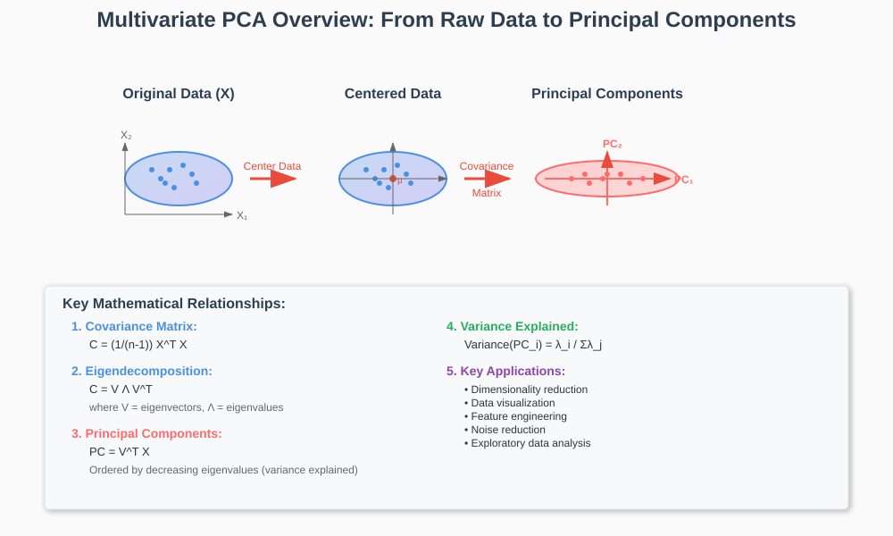
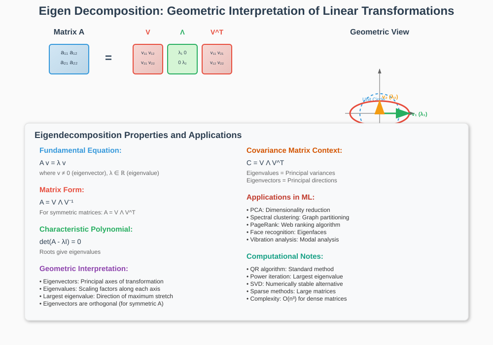
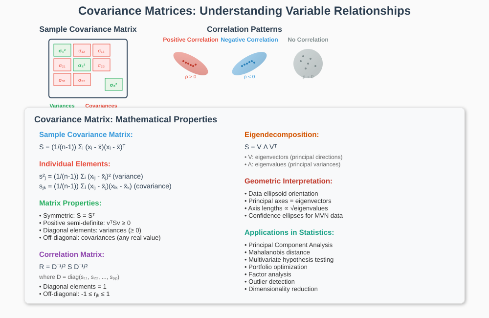
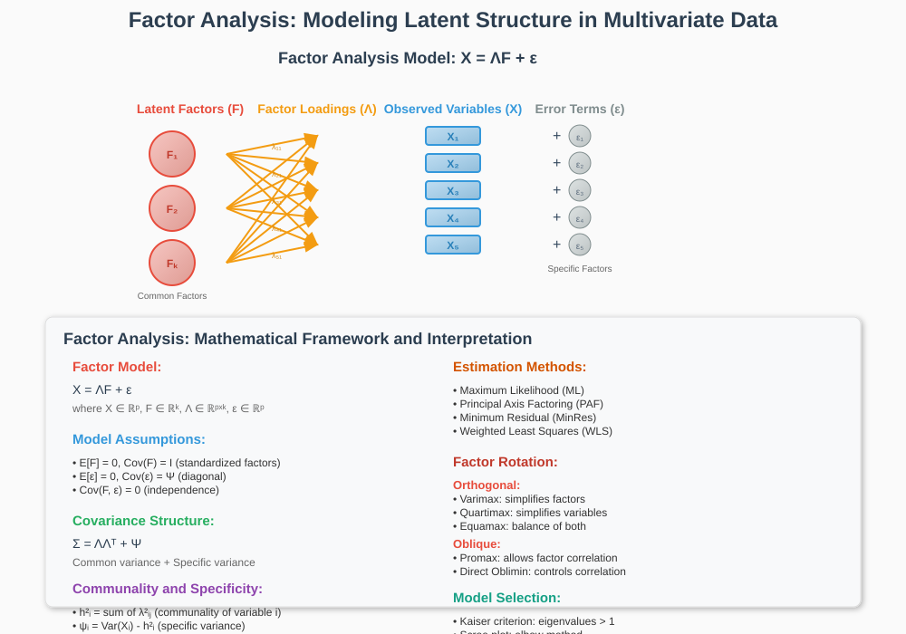
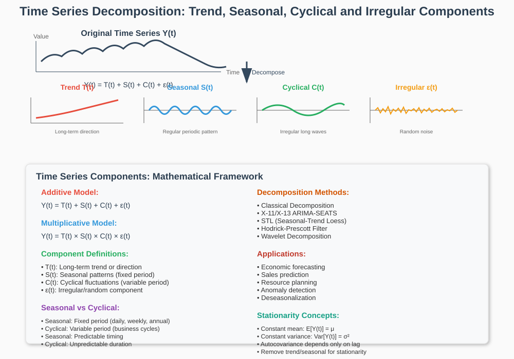
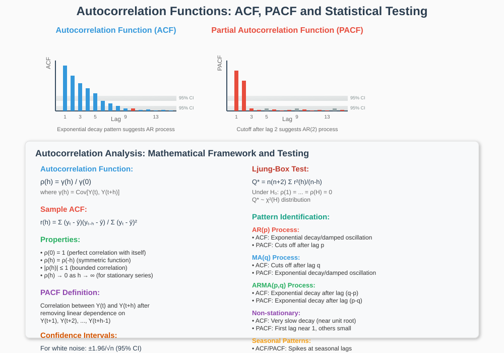
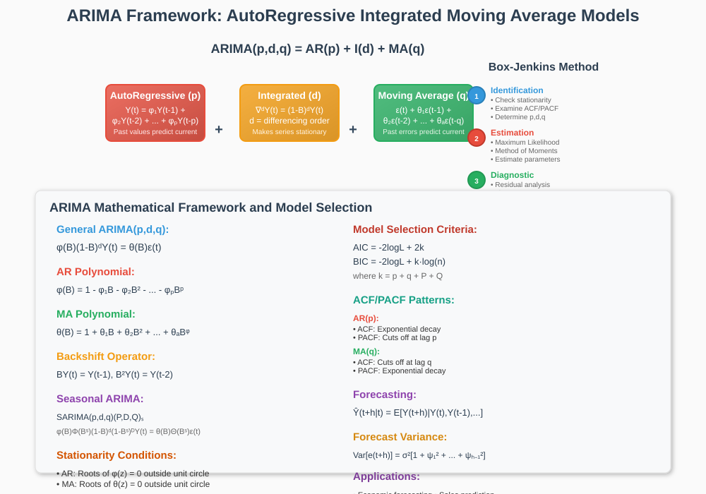

Multivariate & Time Series Statistics
Advanced statistical methods for machine learning, data science, and engineering applications
Quick Navigation
- 🔍 Multivariate Analysis Overview
- 📊 Principal Component Analysis (PCA)
- 🧮 Eigen Decomposition & Covariance Matrices
- 📈 Factor Analysis
- ⏰ Time Series Fundamentals
- 🔗 Autocorrelation & Stationarity
- 📋 ARIMA Models
- 🔬 Implementation & Tools
- 📚 References & Further Reading
🔍 Multivariate Analysis Overview

Multivariate statistics deals with the analysis of multiple variables simultaneously, uncovering relationships, patterns, and structures in high-dimensional data. This field is fundamental to modern machine learning and data science.
Core Applications:
- Dimensionality Reduction: Reducing feature space while preserving information
- Data Visualization: Projecting high-dimensional data to 2D/3D spaces
- Feature Engineering: Creating meaningful representations from raw data
- Noise Reduction: Separating signal from noise in complex datasets
- Pattern Recognition: Identifying underlying structures in multivariate data
Key Mathematical Foundations:
- Linear Algebra: Matrix operations, eigenvalues, eigenvectors
- Probability Theory: Multivariate distributions, covariance structures
- Optimization: Finding optimal projections and transformations
- Statistical Inference: Testing hypotheses about multivariate relationships
Modern ML Integration:
- Deep Learning: PCA for data preprocessing and visualization
- Feature Selection: Identifying most informative variables
- Clustering: Understanding data structure before unsupervised learning
- Anomaly Detection: Using multivariate statistical measures
📊 Principal Component Analysis (PCA)
PCA transforms correlated variables into a set of linearly uncorrelated components, maximizing variance retention while reducing dimensionality.
Mathematical Framework:
Given data matrix X ∈ ℝⁿˣᵖ (n observations, p variables):
C = (1/(n-1)) X^T X
Where C is the covariance matrix.
PCA Steps:
- Step 1: Center the data (subtract means)
- Step 2: Compute covariance matrix C
- Step 3: Find eigenvalues λᵢ and eigenvectors vᵢ of C
- Step 4: Sort eigenvalues in descending order
- Step 5: Select top k components for dimensionality reduction
Principal Components:
PC₁ = v₁^T X (1st principal component)
PC₂ = v₂^T X (2nd principal component)
...
PCₖ = vₖ^T X (kth principal component)
Variance Explained:
Variance Explained by PCᵢ = λᵢ / Σⱼ λⱼ
Cumulative Variance = Σᵢ₌₁ᵏ λᵢ / Σⱼ₌₁ᵖ λⱼ
Key Properties:
- Orthogonality: Principal components are uncorrelated
- Variance Maximization: PC₁ captures maximum variance
- Dimensionality Reduction: Retain most information with fewer variables
- Reconstruction: Original data can be approximated using selected PCs
Practical Considerations:
- Scaling: Standardize variables when they have different units
- Interpretability: PCs are linear combinations of original variables
- Overfitting: Cross-validation for optimal number of components
- Computational Complexity: O(p³) for eigendecomposition
Applications in ML:
- Data Preprocessing: Reducing computational burden
- Visualization: 2D/3D plots of high-dimensional data
- Feature Engineering: Creating uncorrelated features
- Noise Reduction: Filtering out low-variance components
🧮 Eigen Decomposition & Covariance Matrices

Eigendecomposition is the foundation of PCA and many multivariate techniques, providing geometric interpretation of linear transformations.
Mathematical Definition:
For square matrix A, eigenvalue λ and eigenvector v satisfy:
A v = λ v
Covariance Matrix Properties:

Sample Covariance Matrix:
S = (1/(n-1)) Σᵢ₌₁ⁿ (xᵢ - x̄)(xᵢ - x̄)^T
Where:
- xᵢ = i-th observation vector
- x̄ = sample mean vector
- S = p×p covariance matrix
Key Properties:
- Symmetry: S = S^T
- Positive Semi-definite: v^T S v ≥ 0 for all v
- Diagonal Elements: Variances of individual variables
- Off-diagonal Elements: Covariances between variable pairs
Eigendecomposition of Covariance Matrix:
S = V Λ V^T
Where:
- V = matrix of eigenvectors (principal directions)
- Λ = diagonal matrix of eigenvalues (principal variances)
- V^T = transpose of eigenvector matrix
Geometric Interpretation:
- Eigenvectors: Principal axes of the data ellipsoid
- Eigenvalues: Variances along principal axes
- Largest Eigenvalue: Direction of maximum variance
- Smallest Eigenvalue: Direction of minimum variance
Computational Methods:
- Power Iteration: For largest eigenvalue/eigenvector
- QR Algorithm: For all eigenvalues simultaneously
- Singular Value Decomposition (SVD): Numerically stable alternative
- Iterative Methods: For large sparse matrices
SVD Connection:
X = U Σ V^T
Then:
S = V (Σ^2/(n-1)) V^T
Applications:
- Quadratic Forms: Optimization and statistical testing
- Ellipsoid Fitting: Confidence regions and outlier detection
- Mahalanobis Distance: Accounting for variable correlations
- Multivariate Normal Distribution: Density estimation and sampling
📈 Factor Analysis

Factor Analysis models observed variables as linear combinations of unobserved latent factors plus error terms.
Mathematical Model:
X = Λ F + ε
Where:
- X = p×1 vector of observed variables
- Λ = p×k matrix of factor loadings
- F = k×1 vector of common factors
- ε = p×1 vector of specific factors (errors)
Model Assumptions:
- E[F] = 0, Cov(F) = I (factors are standardized and uncorrelated)
- E[ε] = 0, Cov(ε) = Ψ (errors have zero mean, diagonal covariance)
- Cov(F, ε) = 0 (factors and errors are uncorrelated)
Covariance Structure:
Σ = Λ Λ^T + Ψ
Factor Loadings Interpretation:
- λᵢⱼ = loading of variable i on factor j
- |λᵢⱼ| indicates strength of relationship
- Sign of λᵢⱼ indicates direction of relationship
Communality and Specificity:
h²ᵢ = Σⱼ λ²ᵢⱼ (communality of variable i)
ψᵢ = Var(Xᵢ) - h²ᵢ (specific variance of variable i)
Estimation Methods:
- Maximum Likelihood (ML): Assumes multivariate normality
- Principal Axis Factoring: Uses eigendecomposition approach
- Minimum Residual: Minimizes off-diagonal residuals
- Weighted Least Squares: For ordinal data
Factor Rotation:
Orthogonal Rotations:
- Varimax: Maximizes variance of squared loadings within factors
- Quartimax: Simplifies variables (maximizes high loadings)
- Equamax: Combination of varimax and quartimax
Oblique Rotations:
- Promax: Allows factors to be correlated
- Direct Oblimin: Controls degree of correlation between factors
Model Selection:
Number of Factors:
- Kaiser Criterion: Eigenvalues > 1
- Scree Plot: Elbow in eigenvalue plot
- Parallel Analysis: Compare with random data eigenvalues
- Information Criteria: AIC, BIC for model comparison
Goodness of Fit:
- Chi-square Test: Overall model fit
- RMSEA: Root Mean Square Error of Approximation
- CFI: Comparative Fit Index
- TLI: Tucker-Lewis Index
Differences from PCA:
- Purpose: Factor analysis seeks to explain correlations
- Model: FA has error terms, PCA doesn't
- Factors: FA factors are latent constructs
- Rotation: FA factors can be rotated for interpretation
⏰ Time Series Fundamentals

Time series analysis studies data points collected over time to understand underlying patterns, trends, and dependencies.
Basic Components:
Additive Model:
Y(t) = T(t) + S(t) + C(t) + ε(t)
Multiplicative Model:
Y(t) = T(t) × S(t) × C(t) × ε(t)
Where:
- Y(t) = observed value at time t
- T(t) = trend component
- S(t) = seasonal component
- C(t) = cyclical component
- ε(t) = irregular/random component
Key Concepts:
Stationarity:
A time series is stationary if its statistical properties don't change over time:
- Constant Mean: E[Y(t)] = μ for all t
- Constant Variance: Var[Y(t)] = σ² for all t
- Autocovariance Depends Only on Lag: Cov[Y(t), Y(t+h)] = γ(h)
Types of Stationarity:
- Strict Stationarity: Joint distribution unchanged by time shifts
- Weak Stationarity: Only first two moments are time-invariant
- Trend Stationarity: Stationary after removing deterministic trend
Common Non-stationary Patterns:
- Random Walk: Y(t) = Y(t-1) + ε(t)
- Random Walk with Drift: Y(t) = α + Y(t-1) + ε(t)
- Linear Trend: Y(t) = α + βt + ε(t)
- Exponential Trend: Y(t) = αe^{βt} + ε(t)
Transformation Techniques:
Differencing:
∇Y(t) = Y(t) - Y(t-1) (first difference)
∇²Y(t) = ∇Y(t) - ∇Y(t-1) (second difference)
Log Transformation:
Z(t) = log(Y(t))
Seasonal Differencing:
∇ₛY(t) = Y(t) - Y(t-s)
Where s is the seasonal period.
White Noise:
ε(t) ~ WN(0, σ²)
Properties:
- E[ε(t)] = 0 for all t
- Var[ε(t)] = σ² for all t
- Cov[ε(t), ε(s)] = 0 for t ≠ s
🔗 Autocorrelation & Stationarity

Autocorrelation measures the linear relationship between a time series and its lagged values.
Autocovariance Function:
γ(h) = Cov[Y(t), Y(t+h)] = E[(Y(t) - μ)(Y(t+h) - μ)]
Autocorrelation Function (ACF):
ρ(h) = γ(h) / γ(0) = Corr[Y(t), Y(t+h)]
Properties of ACF:
- ρ(0) = 1 (perfect correlation with itself)
- ρ(h) = ρ(-h) (symmetric function)
- |ρ(h)| ≤ 1 (bounded between -1 and 1)
- ρ(h) → 0 as h → ∞ for stationary series
Sample ACF:
r(h) = Σᵗ⁼ʰ⁺¹ⁿ (yₜ - ȳ)(yₜ₋ₕ - ȳ) / Σᵗ⁼¹ⁿ (yₜ - ȳ)²
Partial Autocorrelation Function (PACF):
PACF at lag h is the correlation between Y(t) and Y(t+h) after removing the linear dependence on Y(t+1), Y(t+2), ..., Y(t+h-1).
Ljung-Box Test for Autocorrelation:
Q* = n(n+2) Σₕ₌₁ᴴ r²(h)/(n-h)
Under H₀: ρ(1) = ρ(2) = ... = ρ(H) = 0, Q* ~ χ²(H)
Stationarity Tests:
Augmented Dickey-Fuller (ADF) Test:
∇Y(t) = α + βt + γY(t-1) + Σᵢ₌₁ᵖ δᵢ∇Y(t-i) + ε(t)
- H₀: γ = 0 (unit root, non-stationary)
- H₁: γ < 0 (stationary)
Kwiatkowski-Phillips-Schmidt-Shin (KPSS) Test:
Tests for trend stationarity:
- H₀: Series is trend stationary
- H₁: Series has unit root
Phillips-Perron (PP) Test:
Non-parametric alternative to ADF test, robust to heteroscedasticity.
Seasonal Stationarity:
Seasonal Unit Root Tests:
- HEGY Test: Tests for seasonal unit roots
- Canova-Hansen Test: Tests for seasonal stationarity
Seasonal Patterns in ACF:
- Strong seasonality: ACF shows periodic peaks
- Seasonal unit root: ACF decays very slowly at seasonal lags
- Seasonal differencing needed: If seasonal patterns persist after first differencing
Interpreting ACF/PACF Patterns:
AR Process Identification:
- ACF: Exponential decay or damped oscillations
- PACF: Cuts off after lag p
MA Process Identification:
- ACF: Cuts off after lag q
- PACF: Exponential decay or damped oscillations
📋 ARIMA Models

ARIMA (AutoRegressive Integrated Moving Average) models combine autoregression, differencing, and moving averages to model non-stationary time series.
ARIMA(p,d,q) Model:
φ(B)(1-B)ᵈ Y(t) = θ(B) ε(t)
Where:
- φ(B) = 1 - φ₁B - φ₂B² - ... - φₚBᵖ (AR polynomial)
- θ(B) = 1 + θ₁B + θ₂B² + ... + θₓBᵠ (MA polynomial)
- B = backshift operator: B Y(t) = Y(t-1)
- d = degree of differencing
Component Models:
AR(p) - Autoregressive Model:
Y(t) = φ₁Y(t-1) + φ₂Y(t-2) + ... + φₚY(t-p) + ε(t)
Stationarity Condition:
All roots of φ(z) = 0 lie outside the unit circle.
MA(q) - Moving Average Model:
Y(t) = ε(t) + θ₁ε(t-1) + θ₂ε(t-2) + ... + θₓε(t-q)
Invertibility Condition:
All roots of θ(z) = 0 lie outside the unit circle.
ARMA(p,q) Model:
Y(t) = φ₁Y(t-1) + ... + φₚY(t-p) + ε(t) + θ₁ε(t-1) + ... + θₓε(t-q)
Seasonal ARIMA: SARIMA(p,d,q)(P,D,Q)ₛ
φ(B)Φ(Bˢ)(1-B)ᵈ(1-Bˢ)ᴰ Y(t) = θ(B)Θ(Bˢ) ε(t)
Where:
- (P,D,Q) = seasonal AR, differencing, MA orders
- s = seasonal period (e.g., 12 for monthly data)
- Φ(Bˢ), Θ(Bˢ) = seasonal polynomials
Model Identification:
Box-Jenkins Methodology:
Step 1: Identification
- Plot time series: Identify trends, seasonality
- Check stationarity: ADF, KPSS tests
- Apply transformations: Differencing, log transformation
- Examine ACF/PACF: Determine p, q orders
Step 2: Estimation
Maximum Likelihood Estimation:
L(φ, θ, σ²) = -n/2 log(2π) - n/2 log(σ²) - 1/(2σ²) S(φ, θ)
Method of Moments:
Use Yule-Walker equations for AR parameters.
Step 3: Diagnostic Checking
Residual Analysis:
- Ljung-Box test: Test for residual autocorrelation
- Jarque-Bera test: Test for normality
- ARCH test: Test for heteroscedasticity
Model Selection Criteria:
Akaike Information Criterion (AIC):
AIC = -2 log L + 2k
Bayesian Information Criterion (BIC):
BIC = -2 log L + k log(n)
Where k = p + q + P + Q (number of parameters).
Forecasting:
h-step ahead forecast:
Ŷ(t+h|t) = E[Y(t+h) | Y(t), Y(t-1), ...]
Forecast Variance:
Var[e(t+h)] = σ² [1 + ψ₁² + ψ₂² + ... + ψₕ₋₁²]
Where ψⱼ are coefficients from the infinite MA representation.
Prediction Intervals:
Ŷ(t+h|t) ± z_{α/2} √Var[e(t+h)]
Advanced ARIMA Extensions:
- ARFIMA: Fractional integration for long memory
- GARCH: Modeling time-varying volatility
- Vector ARIMA (VARIMA): Multivariate time series
- Threshold ARIMA: Non-linear regime switching
🔬 Implementation & Tools
Python Libraries:
Statistical Modeling:
import pandas as pd
import numpy as np
import statsmodels.api as sm
from statsmodels.tsa.arima.model import ARIMA
from statsmodels.tsa.seasonal import seasonal_decompose
from statsmodels.tsa.stattools import adfuller, kpss
Machine Learning:
from sklearn.decomposition import PCA, FactorAnalysis
from sklearn.preprocessing import StandardScaler
from sklearn.model_selection import cross_val_score
Visualization:
import matplotlib.pyplot as plt
import seaborn as sns
from statsmodels.graphics.tsaplots import plot_acf, plot_pacf
R Libraries:
library(forecast) # ARIMA modeling
library(tseries) # Time series tests
library(vars) # Vector autoregression
library(psych) # Factor analysis
library(corrplot) # Correlation visualization
Google Colab Examples:

PCA Implementation:
# PCA with scikit-learn
from sklearn.decomposition import PCA
from sklearn.preprocessing import StandardScaler
# Standardize data
scaler = StandardScaler()
X_scaled = scaler.fit_transform(X)
# Fit PCA
pca = PCA(n_components=0.95) # Retain 95% variance
X_pca = pca.fit_transform(X_scaled)
# Explained variance
print(f"Components: {pca.n_components_}")
print(f"Explained variance ratio: {pca.explained_variance_ratio_}")
ARIMA Implementation:
# ARIMA modeling with statsmodels
from statsmodels.tsa.arima.model import ARIMA
import warnings
warnings.filterwarnings('ignore')
# Fit ARIMA model
model = ARIMA(ts_data, order=(1,1,1))
fitted_model = model.fit()
# Model summary
print(fitted_model.summary())
# Forecasting
forecast = fitted_model.forecast(steps=10)
conf_int = fitted_model.get_forecast(steps=10).conf_int()
Factor Analysis Implementation:
# Factor Analysis with scikit-learn
from sklearn.decomposition import FactorAnalysis
from sklearn.model_selection import cross_val_score
# Determine number of factors
n_factors_range = range(1, 10)
scores = []
for n in n_factors_range:
fa = FactorAnalysis(n_components=n, random_state=42)
score = cross_val_score(fa, X_scaled, cv=5).mean()
scores.append(score)
# Optimal number of factors
optimal_factors = n_factors_range[np.argmax(scores)]
Hugging Face Models:
- 📊 Time Series Transformers: huggingface.co/models?pipeline_tag=time-series-forecasting
- 🔍 Dimensionality Reduction: huggingface.co/spaces/sklearn-docs/dimensionality-reduction
📚 References & Further Reading
📖 Essential Textbooks:
- Johnson & Wichern (2019). Applied Multivariate Statistical Analysis (6th ed.). Pearson.
- Box, Jenkins, Reinsel & Ljung (2015). Time Series Analysis: Forecasting and Control (5th ed.). Wiley.
- Hamilton, J.D. (1994). Time Series Analysis. Princeton University Press.
- Rencher & Christensen (2012). Methods of Multivariate Analysis (3rd ed.). Wiley.
📄 Key Research Papers:
- Hotelling, H. (1933). Analysis of a complex of statistical variables into principal components. Journal of Educational Psychology, 24(6), 417-441.
- Pearson, K. (1901). On lines and planes of closest fit to systems of points in space. Philosophical Magazine, 2(11), 559-572.
- Spearman, C. (1904). General intelligence objectively determined and measured. American Journal of Psychology, 15(2), 201-292.
💻 Online Resources:
- 📊 StatQuest YouTube Channel: Principal Component Analysis
- 📈 Time Series Analysis Course: Penn State STAT 510
- 🔍 Multivariate Statistics: UCLA Statistical Consulting
🔬 ArXiv Papers:
- Transformer Models for Time Series: arxiv.org/abs/2001.08317
- Deep Learning for Multivariate Analysis: arxiv.org/abs/1907.04502
- Modern Factor Analysis Methods: arxiv.org/abs/1906.07152